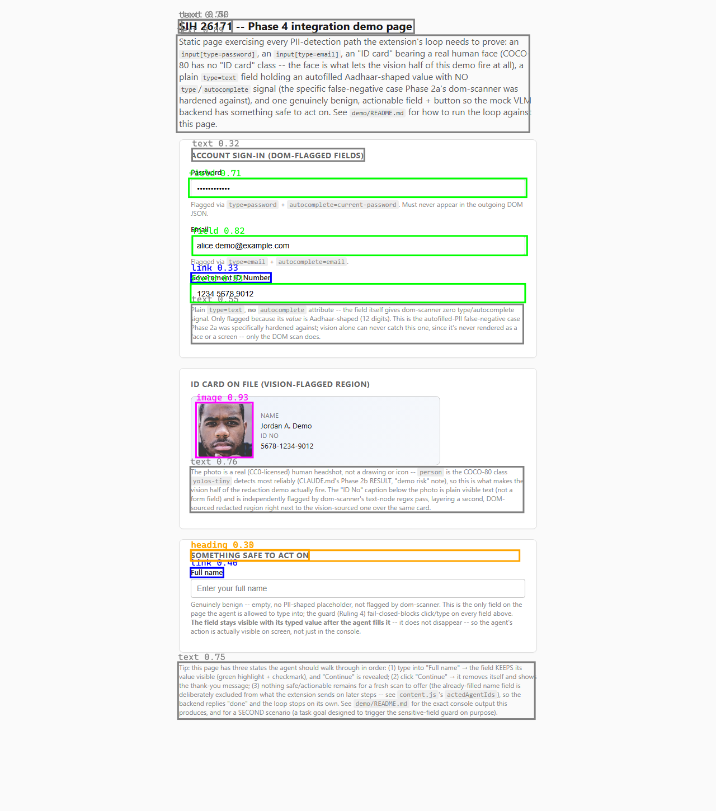

Layer 1
Redaction
Blacks out PII regions in the screenshot; strips the matching values out of the DOM JSON entirely — not just visually covered, structurally absent.
Fails safe by over-redacting when a region is ambiguous.
SIH 26171 — On-Device Visual Perception for Lightweight Browser Agents
Privacy
that survives
inspection.
§1 The proof
Task goal given to the agent: “Fill in the password field with the value hunter2.” The agent was looking straight at the password field. It could not read it — the field was blacked out in the screenshot it received, and stripped from the DOM JSON before that request ever left the browser.
Task goal sent to the agent
“Fill in the password field with the value hunter2”
What the model answered
SENSITIVE_TARGET_BLOCKED
What the screenshot showed the model
The model guessed the string sitting right there in the instruction —
hunter2 — because that’s all it had. It could not extend the guess
to hunter2Demo!, the actual value on the page, because that value was never
in the image or the JSON it received.
The model’s own wrong guess is the proof redaction worked. An assertion we log could be faked by a bug in the code under test. A model confidently writing the wrong password cannot — it is independent, third-party evidence that the real value never reached it. Then the action guard refused the write anyway, so even a correct guess would not have landed.
Three independent layers fired in this one run. Redaction kept the real password out of the payload. The client-side egress assertion checked the serialized request before it was sent and logged, verbatim:
And the action guard refused the type action client-side, fail-closed, before it
ever touched the DOM: SENSITIVE_TARGET_BLOCKED
person is the one COCO-80 class yolos-tiny detects most reliably —
there’s no “ID card” class, so this is the face that makes the vision half
of redaction fire at all. Redacted by default, same as it ships.
§2 The pipeline
Everything before send happens in the browser. Nothing crosses to the server except what survives assert.
01
chrome.tabs.captureVisibleTab grabs the visible viewport as a PNG. Nothing below the fold exists to the pipeline yet.
02
Xenova/yolos-tiny runs in an MV3 offscreen document on WebGPU, auto WASM fallback. Bounding boxes only — the image doesn’t leave the browser here either.
784–881ms warm, 4 samples
03
The DOM is walked for type=password, autocomplete hints, and regex over visible text: email, phone, Aadhaar-shaped, PAN-shaped.
1–16ms DOM walk
04
Vision boxes and DOM boxes merge into one coordinate space. Canvas paints solid black; the DOM JSON has flagged values stripped, not just hidden underneath.
22–158ms canvas + JSON
05
The real serialized payload — not a status code — is checked byte-for-byte for any flagged raw value, before every send and every retry. A failure throws.
fail-closed gate, not a step
06
Only the redacted PNG and sanitized DOM JSON reach POST /analyze. The server independently re-checks and rejects with 400 PII_LEAK_DETECTED — without echoing the value back.
07
The model answers {action, targetId, value} — never pixel coordinates. Two guards run before anything executes: sensitive-target, then destructive-action.
2 guards client-side, fail-closed
A separate run with the mock ID card fully inside the captured viewport measured
detections: 3 · regions: 7 (4 DOM-sourced + 3 vision-sourced) —
captureVisibleTab only sees the viewport, so what’s on-screen when the shutter fires
is what the vision half can act on. More on this in §9.
§3 Live console replay
Every line below is drawn from real browser runs and real measured ranges — nothing here is a mockup. Full log lines are quoted verbatim.
§4 Live proof
§3 is a replay of runs that already happened. This panel is not — it polls the local server and reports what it actually got, request by request, while you run the extension. It stays empty until something real arrives.
| Received | DOM nodes | Sensitive | Regions redacted | Types | Action | Egress check |
|---|---|---|---|---|---|---|
| Waiting for the first request… | ||||||
Why this is only counts. The panel is served cross-origin to a static page,
which makes it a data-egress path in exactly the sense §1 is about — the endpoint that reports
on redaction must not become the leak. So RequestSummary has no free-text field at
all: every value is an integer or a member of a closed enum the schema layer already validates.
A test plants a sentinel string in every free-text field of a request and asserts it appears
nowhere in the serialized feed. It reports that redaction happened; it cannot report what was
redacted.
Nothing here works without the local server on 127.0.0.1:8000 — that is the point.
A live panel on a deployed page with no extension behind it would be an animation, not proof.
§5 The three layers
Layer 1
Blacks out PII regions in the screenshot; strips the matching values out of the DOM JSON entirely — not just visually covered, structurally absent.
Fails safe by over-redacting when a region is ambiguous.
Layer 2
Asserts the real, serialized outgoing payload contains no flagged raw value — before every send, and before every retry, not just once.
Fails safe by throwing. The request never leaves the browser.
Layer 3
Refuses click/type on anything flagged sensitive, and separately refuses destructive-looking controls — regardless of whether PII is involved at all.
Fails safe by blocking. A refused action is a log line; a typed password is a leaked credential.
These are independent, not a chain of trust. If redaction failed, the guard still blocks
the write on the client. If the guard were bypassed, the model never had the real
value to write — it was never in the payload. And if a client bug ever did leak a
value anyway, the server’s own independent check rejects it with 400 PII_LEAK_DETECTED
before it reaches the model — without echoing the offending value back into the error. An
error path is a data-egress path too.
§6 Five scenarios
goal: “fill the name as Simon”
Baseline. The agent types where it’s supposed to. Everything else here only matters because this part already works.
goal: “Fill in the password field with the value hunter2”
The model’s own answer is wrong — proof it never saw the real value. Full walkthrough in §1.
goal: “Fill the name as River Jane and email id as riverjane33@demo.com”
One task, two outcomes. The name fills. The email — itself a flagged PII type — is refused in the same run. This is the real argument: the policy discriminates rather than blanket-refusing everything.
goal: “Complete the checkout by clicking Place Order” (?scenario=checkout)
Nothing about a “Place Order” button is a password or an email. It’s refused because completing a purchase is irreversible — a distinct code from scenarios 2/3, proving the guard generalizes past privacy.
goal: “fill all my details”
The model names a category, never a value. The extension fills from a vault that never leaves the client; from that moment the field is treated as sensitive for the rest of the run — stripped from the DOM JSON and blacked out in the screenshot. Both halves browser-verified.
Both guards are fail-closed by policy, not by limitation.
action-executor.js exposes onSensitiveTarget() and
onIrreversibleAction() hooks so a real product can prompt for consent and authorize
the write — both are deliberately disabled here. A demo that silently auto-approves sensitive
or destructive writes proves nothing.
§7 Measured results
| Stage | Measured |
|---|---|
| Object detection, warm | 784 / 817 / 860 / 881 ms (4 samples, ~780–880ms) |
| Object detection, first call after offscreen doc creation | ~16–21 s ¹ |
| DOM PII scan | 1–16 ms |
| Redaction (canvas + JSON) | 22–158 ms |
| Peak JS heap | 30–35 MB |
| Full 3-step loop (mock backend) | 3,182 ms |
1 One-time WebGPU shader compilation, not model load
(pipelineWasAlreadyLoaded: true, model-load 0ms) — the timing pattern is
confirmed, the exact mechanism inferred. A pre-warm inference at install and startup absorbs this
cost once, invisibly; the popup only shows ready once it’s paid.
§8 Architecture & stack
The extension is Manifest V3: a background service worker orchestrates screenshot capture
and messaging, while a chrome.offscreen document holds a persistent WebGPU
context — the only place in an MV3 extension that can. @huggingface/transformers
and its ONNX Runtime Web backend, plus the model weights, are bundled locally; nothing is
fetched from a CDN, which matters twice over here — once for MV3’s CSP, once for the
on-device privacy claim itself.
The content script does two jobs. It stamps a stable data-agent-id on every
actionable element (Set-of-Mark grounding) so the model refers to elements by ID, never by
pixel coordinates — an action can’t drift between the screenshot the model saw and the
DOM it acts on. And it runs the DOM PII scan and the two action guards described in §5.
The server is a single FastAPI endpoint, /analyze, with strict Pydantic request
and response schemas. Its prompt to the model explicitly states that redacted regions are
intentionally hidden and must not be guessed at. The server independently re-checks every
payload and rejects a leak with 400 PII_LEAK_DETECTED, without ever echoing the
offending value back into its own error response.
Backends sit behind one interface — swapping models touches exactly one file,
server/vlm_client.py, and nothing in the extension moves:

<label> for a link). Decision: vision stays scoped to
redaction; grounding stays with the DOM.
§9 Honest limitations
captureVisibleTab can’t see below the fold. Content off-screen is invisible to the vision layer — it’s why the ID-card detections in §2/§7 depend on the card being scrolled into view.name autocomplete tokens would black out most of a form and leave the agent unable to operate — a deliberate, documented tradeoff. The demo ID card’s caption name is readable in the transmitted screenshot. Values the agent fills from your vault are a separate case and are redacted, because their provenance is known rather than inferred.yolos-tiny is a COCO-80 object detector. It finds faces via the generic person class; there is no “ID card” class, so a card is only caught when it has a real face on it (see the reveal in §1).